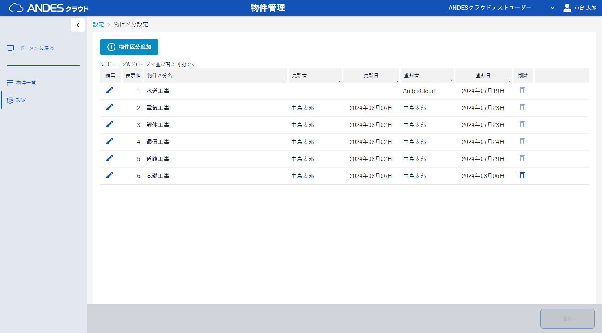
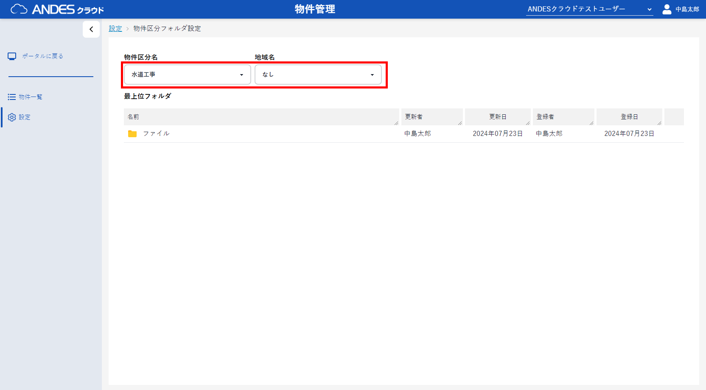
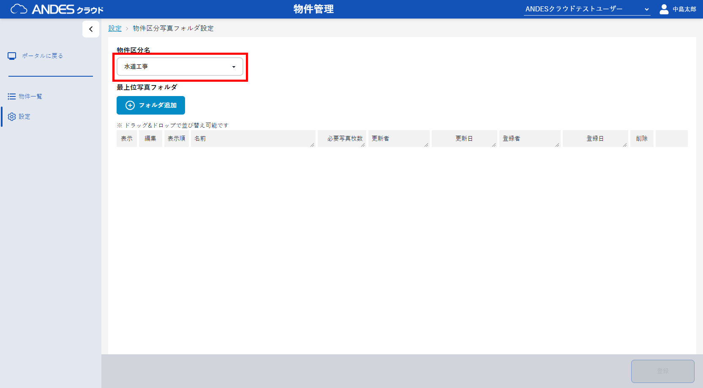
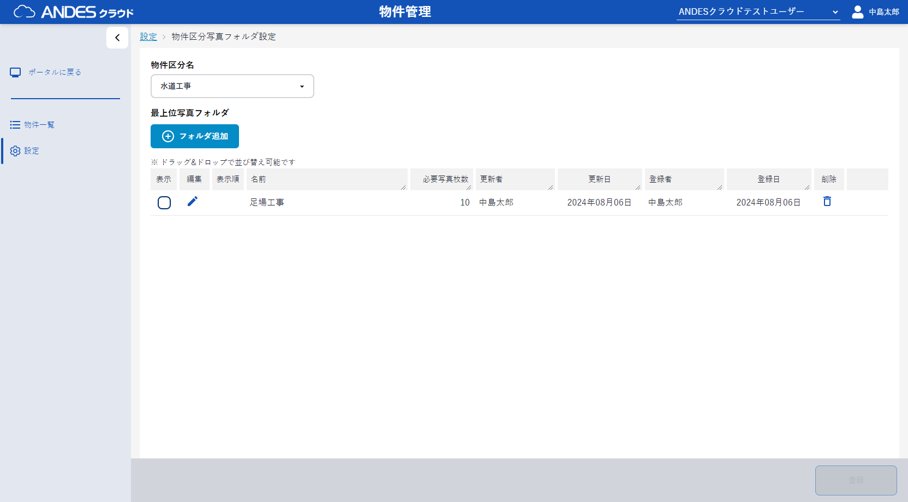

- 画面左のサイドバーから「設定」をクリックし、それぞれの項目について設定を行います。
- 物件区分設定で、 「物件区分追加」ボタンをクリックし、物件区分を登録します。
- 物件区分タブ設定で、登録した物件区分名を選択します。
- 表示するタブのチェックボックスを選択し、右下の「登録」ボタン をクリックします。
-
CAD地域設定で、「CAD地域追加」ボタンをクリックし、CAD地域を登録します。
（※地域を用いない場合は設定不要です） - 物件区分フォルダ設定から利用する、 「物件区分名」、 「地域名」 を選択します。
- 一覧から「ファイル」をクリックします。
-
「フォルダ追加」ボタンからフォルダの追加、
「ファイル選択」またはドラッグ＆ドロップでのファイル追加
が可能です。
物件作成時、ここで選択しているした区分名と地域名を選択することで、登録されたフォルダとファイルを「ファイル」タブの初期値として物件を作成します。 - 物件区分写真フォルダ設定で、登録した物件区分名を選択します。
- 「フォルダ追加」ボタンをクリックし、フォルダを追加します。
-
表示するフォルダのチェックボックスをチェックし、「登録」ボタンをクリックします。
物件作成時、ここで表示対象となっているフォルダを「写真」タブのフォルダ初期値として物件を作成します。
ポイント
物件区分設定：物件作成時に使用する物件区分を登録します。
物件区分タブ設定、 物件区分タブ項目設定：物件区分ごとに物件作成時に追加登録できる項目を登録できます。
物件区分フォルダ設定：物件区分ごとに物件作成後のファイルストレージの雛形を登録できます。
物件区分写真フォルダ設定：物件区分・CAD地域ごとに物件作成後の写真ファイルストレージの雛形を登録できます。
物件区分タブ設定、 物件区分タブ項目設定：物件区分ごとに物件作成時に追加登録できる項目を登録できます。
物件区分フォルダ設定：物件区分ごとに物件作成後のファイルストレージの雛形を登録できます。
物件区分写真フォルダ設定：物件区分・CAD地域ごとに物件作成後の写真ファイルストレージの雛形を登録できます。



ポイント
独自のタブを作成する場合は
「物件区分タブを設定する」と
「物件区分タブ項目を設定する」
を合わせてご確認ください。


ポイント
物件区分とCAD地域を元に、物件作成時のテンプレートのフォルダとファイルが設定できます。
地域を利用されない場合は初期提供しております「なし」をご利用ください。 より詳しい情報をお求めの場合は「物件区分フォルダを設定する」をご覧ください
地域を利用されない場合は初期提供しております「なし」をご利用ください。 より詳しい情報をお求めの場合は「物件区分フォルダを設定する」をご覧ください





